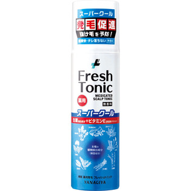

返回列表
产品名称：柳屋 薬用育毛 フレッシュトニック ＜無香料スーパークール＞

柳屋本店 柳屋 薬用育毛 フレッシュトニック ＜無香料スーパークール＞ １９０ｇ（医薬部外品）
メーカー 柳屋本店
JANコード 4903018183528
商品の特徴
抜け毛・ふけ・かゆみを防ぐ
- 成分・分量
- 有効成分:酢酸トコフェロール、グリチルリチン酸2K、センブリエキス
その他の成分:メントール、トウガラシチンキ、クララエキス-1、ゴボウエキス、シナノキエキス、シラカバエキス、センキュウエキス、トウキエキス-1、ヒキオコシエキス-1、アセチル-DL-メチオニン、タウリン、セリン、POE硬化ヒマシ油、BG、pH調整剤、エタノール、DME、LPG
- 用法及び用量
- 缶を上下に数回振り、ボタンを上にしてご使用ください。1日2、3回、頭皮にノズルを2cm位まで近付けて適量をスプレーし、軽くマッサージしてください。